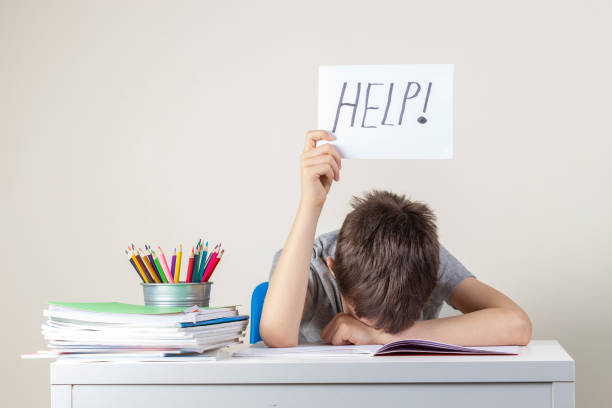

stress_managemnet

-
Remember to breathe:
Setting aside a couple of minutes every day to practice mindfulness techniques, such as breathing exercises or UCL's 10 Minute Mind, helps you to calm down your body's stress response and shift your attention back to the present moment. In turn, this gives you time to rationally think through the anxieties you have, rid yourself of unhelpful thought patterns and enables you to deal with a large number of exams and begin more effective revision.
-
Eat, sleep and exercise well
Pulling all-nighters, surviving on a poor diet, and getting minimal amounts of movement into your day can increase symptoms of anxiety. For your body's best performance, make sure you're getting 8/9 hours of sleep, enough slow-release carbs, less caffeine and more water, and at least half an hour of exercise per day.
-
Set realistic goals:
Setting realistic goals, whether you have several weeks, days or hours before your exam, helps you to put everything into perspective. Acceptance of your situation and working within the realms of what you have maximises your productivity without the risk of burning yourself out.
-
Don't go it alone:
In 2004, a research paper published in Linguistics and Education saw that revising with peers is an effective study technique as it allows individuals to better absorb their own notes. Furthermore, the emotional benefits of social support tend to include a better sense of confidence and autonomy.
-
Pace yourself through panic:
Panicking before, during or even after an exam is common among university students. If you experience it at any point, take six deep breaths, hydrate yourself, and then go back the problem at hand, being sure to break it down into several, manageable chunks. Remember that there is usually a rational solution to every problem, even if you can't see it at first glance.
-
Believe in yourself:
When being constantly faced with new challenges, we often forget to look back at how far we have come and how much we have already achieved. Given that you have prepared well, there should be no reason for you to worry. Therefore, when experiencing a negative thought, try to replace it with a positive one. For example, instead of thinking 'If I don't get at least a 2:1, I am a failure', think 'Whatever I get, I will be proud of myself and value how much I have already achieved'. You can do this!
-
If you feel like you are struggling, talk to someone:
Asking for help is never shameful. In the most extreme cases, it can help save a life. When struggling, talk to friends, family, or your personal tutor about how you are feeling. Alternatively, don't be afraid to seek professional help and support.